This was a student group project related to product design for a college prototyping course.
Objective
To create an interactive kiosk that is informed by the problems and opportunities presented from a design brief and user research.
Duration
6 weeks
My Role
I contributed to the end-to-end process of making the prototype, with the exception of building the physical kiosk. I made my greatest contributions in the interaction design, visual design, and branding of the digital interface of the kiosk. However, I also helped to conduct user research, data synthesis of our findings, rapid prototyping of the digital interface of the kiosk, user testing, and subsequent iterations of fidelity of the interface.
Tools
Google Suite, Figma, Illustrator
Core Team
Ludi Sabalburo, Dana Chung, Sally U
Mentors
Taylor Jackson Scott - He was the professor at the time who hosted the prototyping course. He helped students with questions related to the nature of the course and the project while hosting quite a few presentation sessions to connect teaching assistants with students for critique on student group projects.
Vanessa Wong - She was our group's teaching assistant and was a main contributor to the feedback that we received about our group's directions with our kiosk.
Affiliations
UC San Diego Cognitive Science Department
Design Challenge
Project Background
The college course, called Prototyping, has taught students the fundamentals of ideation, typography, and, of course, prototyping in design.
Within the scope of the project, our group was tasked to incorporate a combination of user research, typography, visual design, and rapid
ideation/prototyping to create a kiosk that is interactive, intelligent, novel, and informed by research findings. A topic that our group
wanted to address was the movie going experience prior to walking through theater doors.
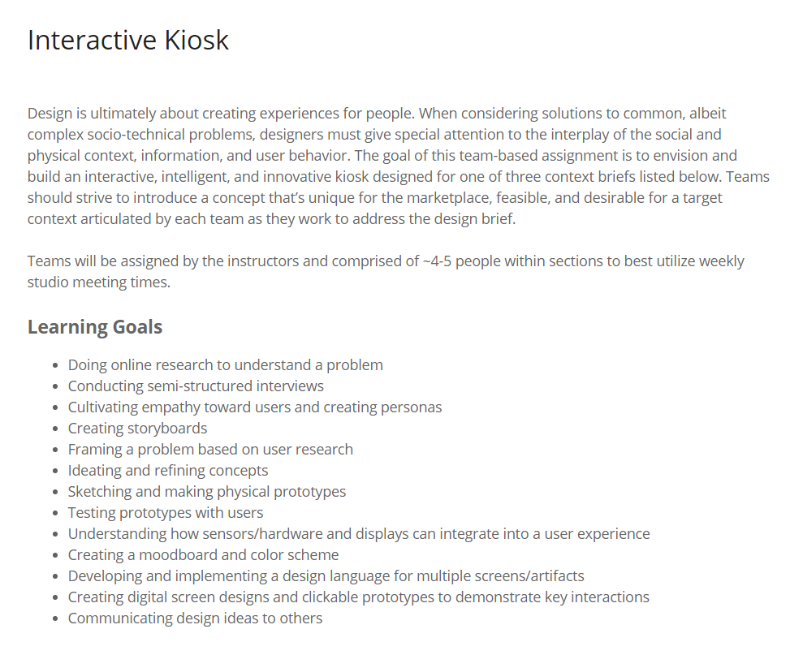
You can find more information about the project through the Assignment page on the course website.
Constraints Faced
The kiosk had to be mindful of existing digital technologies coupled with physical components since the kiosk must be a physically tangible, real-life representation of a potential product.
As the project was part of a college course, there were set deliverables outlined in the assignment page. Thus, it was important to ground our project towards expected timelines and deliverables within the Prototyping course.
Our team, as a whole, had limited working knowledge of constructing physical objects and visual design, especially when it came to connecting our user research and design decisions to the interface and formfactor of the kiosk.
Solution
Our team made Cinemunch, an immersive, touch-based kiosk that features both ticket and food purchasing to expedite the ticketing and food ordering process for moviegoers.
Research
Initial Brainstorming
The topic of the moviegoing experience was not initially committed, but the team had a group discussion of what sort of topic we wanted to explore with the kiosk. Below are initial assumptions from our group of what sorts of kiosks were out there.
Types of Kiosks
ATMs
Street market/festival food stalls
Restaurant cashiers
Restaurant cashiers
Gas station
Vending machines
Soda/ice cream/yogurt refilling machines
Scanners
AMC Ticketing Kiosk
Photo booths
Beauty kiosk - check your skin tone.
Restaurants self-ordering kiosks.
Self-checkout for books in libraries.
Places
Outside events/festivals (e.g. carnivals)
Malls
Parking structures/lots
Japan (lots of services/kiosks)
Movie theaters/entertainment
Parking on streets
Restaurants
Buffets
Libraries
Ludi, one of the team members, came up with with the movie kiosk idea and described some of its potential features to explore, such as preordering food and tickets.
We thought there was definitely a few tangible and interesting concepts to delve deeper into with the movie going experience, which was why a potential movie kiosk
was an idea that the group came to a consensus to.
Interviews
There were about 4 people that we interviewed and the questions that the team asked were revolved around their habits in preparing
themselves to go to the movies. We also wanted to understand people's mental models of ordering tickets and their perspectives
about food to movie theaters. These were findings and commons trends found from the people we interviewed.
Discovered Trends
Two people mentioned that they usually skip the trailers and get there when the actual movie starts, and two others said they usually arrive around 5-10 minutes into the trailers.
The movie-going experience is very likely a social experience. However, addressing hunger when going to the movies can vary from each individual as people's prior experiences from concession stands,
awareness of how expensive food at the movie theaters is, and other people around them can influence people's choices on food purchases.
The concession stands expensive prices and the long lines are deterrants to purchasing foods at the movie theaters.
Insights
The kiosk needs to demonstrate a streamlined ordering process for tickets and food to alleviate the concern for long lines and people potentially entering the theatre after their movie times start.
Although the kiosk must essentially be of reasonable human scale, ordering tickets and/or food within the theater should be an experience with the least amount of friction as possible.
This would be achieved by having a simple, efficient, and intuitive ordering process.
Some mentioned that they have never used a kiosk at the theaters because it’s either not obvious or because they the kiosks take longer to navigate than it is to order from a person behind the counters.
Competitive Analysis
Ludi and I were able to look into some of the different features that 3 different services in the movie theaters offered.
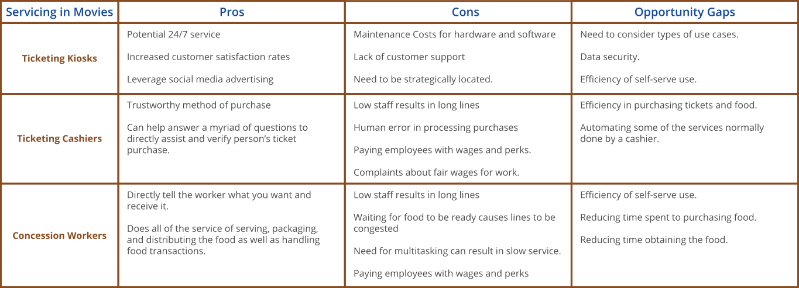
It was important to consider the reliability, efficiency, and the different purchasing tasks of the services that the movie kiosk would offer.
Data Synthesis
Personas
We came up with a total of 4 personas, but 2 of them were not based on initial research findings, so they were ultimately omitted from the basis
of our group's design decision on the kiosk. These personas below are what we came up with that best represented who we interviewed.
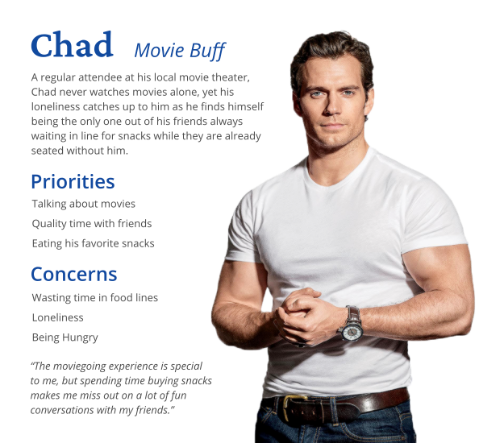
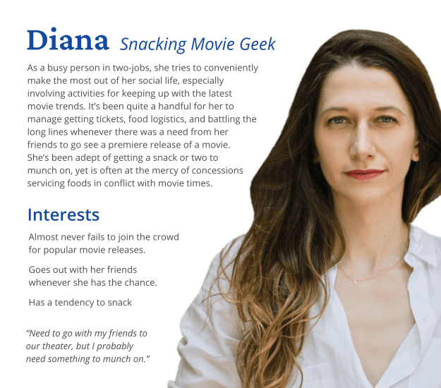
Storyboard
Informed by interviews and secondary research, each of us sought to use storyboards to clarify our understandings of the typical habits and issues
of food within the movie-going experience and the intended impact that our potential movie kiosk would have.
A storyboard that I drew to explain how a group of friends want to get food before their movie starts, but are conflicted with the long concession lines. One of them already pre-ordered their food ahead of time using a ticketing kiosk, which allowed the friends to get their food quickly and have a good movie experience as a result.
Ideating
Initial Sketches of the Physical Kiosk
Some of the kiosk features that each member of the group sketched out would include a screen interface, ticket dispensers, a laser scanner to scan QR codes of mobile ticket purchases, and a buzzer that can notify a person when their food order would be ready.
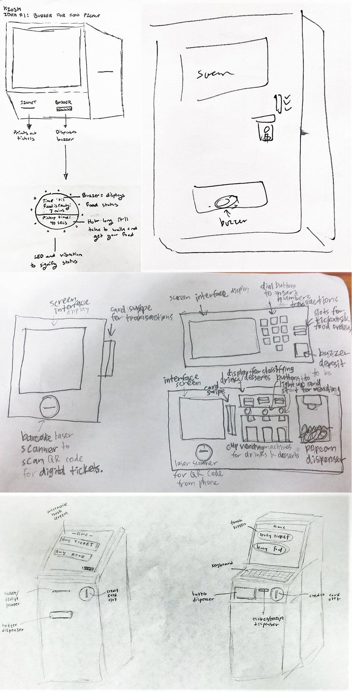
Initial Wireframes of the Kiosk's Digital Interface
Some of the wireframes that I helped to sketch out were the main menu options for either purchase tickets or verifying ticket purchases, movie selection, and food item selection.
The kiosk features can offer ticket purchases just like staff members working at the front-desk ticketing booths, but enabling food purchases during the time the person spends
ordering or verifying tickets.
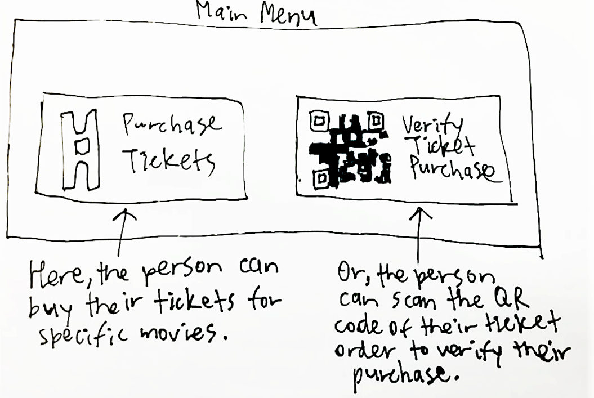
Kiosk interface sketch of the main screen for ticketing selection.
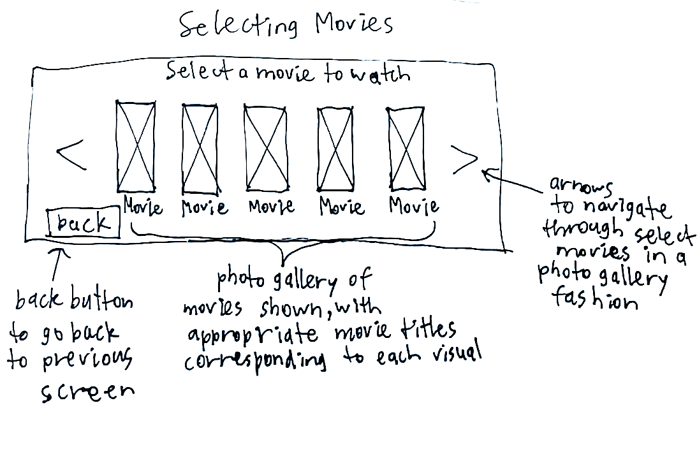
Kiosk interface sketch of how the person can select the movie of their choice.Initial sketch of food item selection that automatically tracks the quantity and price of each item selected as well as the total price of all food items selected.
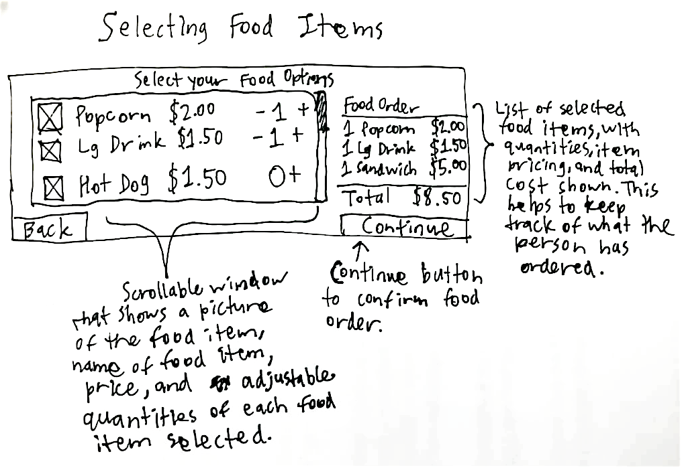
Rough Draft of User Flow
A couple of my team members would be able to sketch a user flow of the kiosk digital interface, which I used to develop the initial structure of higher-fidelity wireframes of the kiosk interface. Below is one of these user flows, made by Sally, one of my other team members.
The sketch of a user flow shown is that after a person selects their movie and food items, they would pay the total cost all in one payment transaction, receive their tickets, and have their food ready.
Initial Prototypes
Wizard of Oz/Live Paper Prototyping
To quickly visualize and test the typical flow of the interface for the kiosk, we made paper versions of the kiosk interface components that would serve as early versions of our kiosk's wireframes.
Our group had three user testing sessions in which some of our members would manually created the wireframes live using the paper components and the participants would select whatever options to
proceed within each wireframe. We also had follow-up questions after the participants navigating through our Wizard-of-Oz prototyping.
Below are a series of pictures that depict wireframes that were assembled during testing as well as the typical flow of the paper prototype, from start to finish.
Overview of the entire user flow of the Wizard of Oz/Live Paper Prototyping. Paper pieces used for each larger white sheet of paper made up a specific section of the interface, as each section was presented one-by-one to the participant.Paper prototype interfaces from selecting movies and confirming ticket order to selecting food items. If the person didn't want to purchase food, they would make the payment for their order and grab their tickets.If the person selects their food items, they would select a delivery method followed by a final order confirmation before making their payment.Once an order has been made for movies and/or food items, the payment screen followed by a confirmation message would appear.
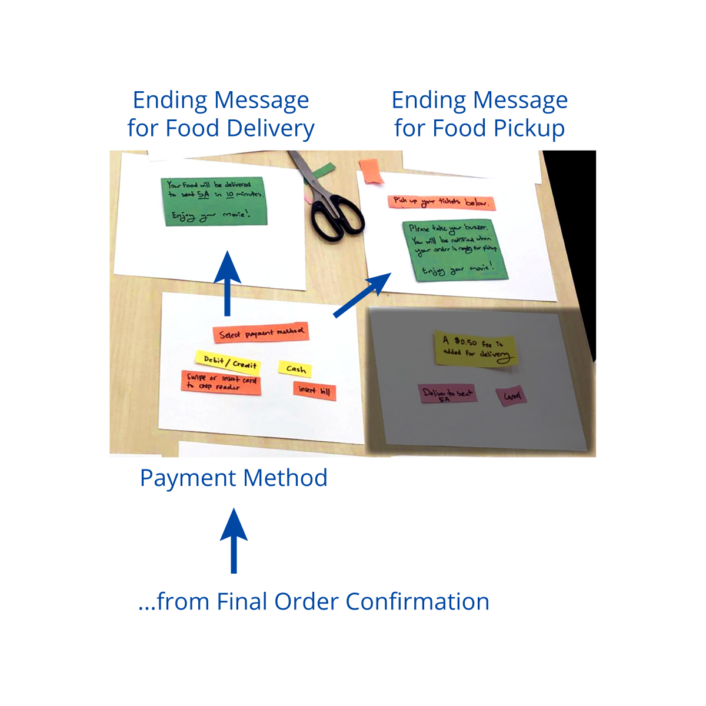
Findings and Insights
After initial expert reviews from our mentors as well as two user tests on the paper prototype, some of the main concerns were the context of the delivery method, as it may be discouraging and distracting for people nearby trying to watch the movie while the food would be delivered.
This made us rethink about how the delivery method would work in relation to the movie theater environment that the person experiences. One person from user testing did mention about the risk of the food being stolen if they were not present at the movie theater, which would inform
future interaction decisions that the delivery method would remain at the person's seat.
However, because the user testing participants explained how they were satisfied with existing aspects of ordering tickets from a cashier, it was an important reminder to combine these findings along with our competitive analysis notes on ticketing cashiers and concession stands
to make the ordering process for tickets and food as a viable alternative (not an overpowering substititute) to existing services at movie theater.
Initial Visual Style Guide
I worked with my team to come up with an initial moodboard that best represented how the movie experience could be viscerally described. The movies seem to be one form of entertainment that charismatically fosters a sense of escapism,
from the typical habits of everyday life into a pleasant, yet adventurous experience. The images and logos that were initially inspired would viscerally represent experiences that were immersive, pleasant, and adventurous.
Because people from our interviews mentioned that they go to the movie theater with friends, I helped to explore other images and logos with other color schemes that seemed to also represent social, safe, and organized experiences.
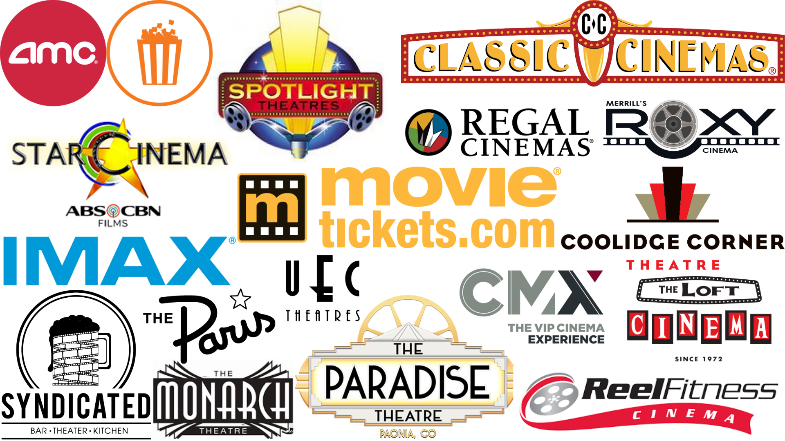
A couple of initial collages of image and logo inspirations found that represent immersive, pleasant, adventurous, social, safe, and organized experiences. Made in Google Slides.
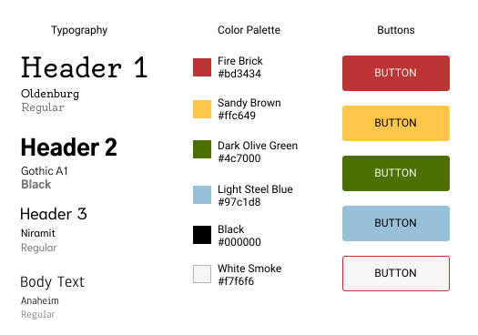
Collage of images that represent the final moodboard along with an initial style guide (made in Google Slides). The style guide (made on Figma) would had red and yellow hues as the dominant colors, with green and light blue hues as accents.
Digital Interface
Below is a live interactive prototype of the kiosk made, made on Figma.
How to Interact with the Prototype - The wireframes are set such that the person must scroll down to 5:15 PM for Alita: Battle Angel for the movie selection, pick 2 IMAX tickets, and select seats at E5 and E6.
If the person decides to purchase food, they must choose both 1 popcorn and 1 drink for the food items. Clicking or tapping on the prototype will show area indicators on where you can click or tap.
The Physical Kiosk
Utilizing Figma's full-screen presentation mode, my laptop was the device needed to simulate a real-life touch-screen display of our kiosk's digital interface since it had the ability to be converted into a tablet
while its touch-screen capabilities enabled the Figma prototype of the kiosk interface to dynamically change wireframe screens in real-time with just a tap.
For the first prototype of the physical kiosk, I supplied the duct tape used to securely mount the laptop so that it would be ready for people to interact with.
With a few additional cardboard pieces attached to the kiosk as well as cut-out holes made, this was our first version of our physical kiosk.
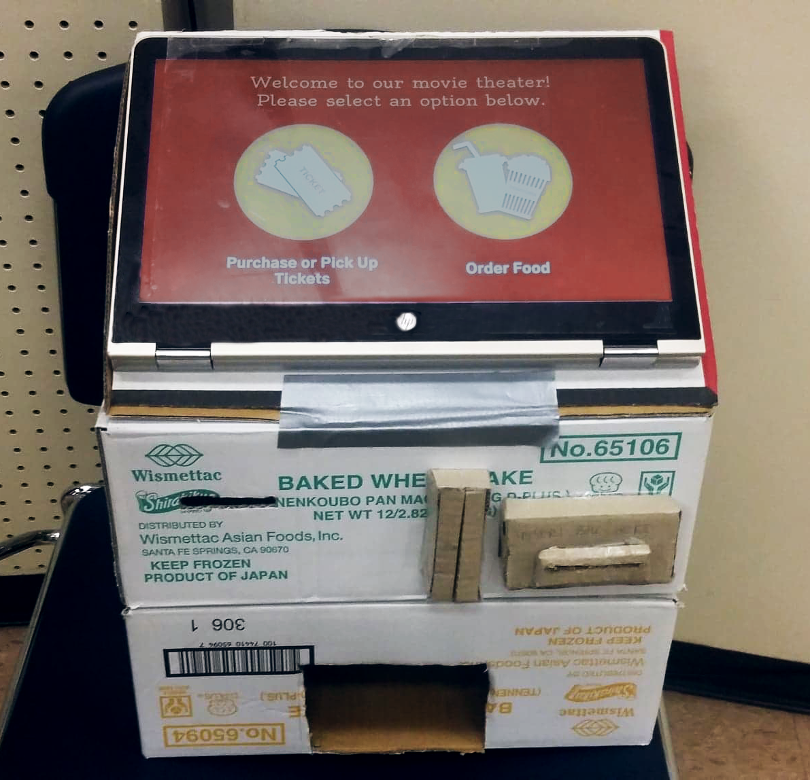
Our first version of our physical kiosk, with my laptop mounted at an angle for convenient viewing, holes to be developed for future features, and a couple of smaller cardboard components.
Iterating
Additional Feedback and Insights
When this kiosk was presented in a symposium-like critique session, Professor Taylor Scott and a few students within the class were rather
impressed by the level of fidelity the kiosk has achieved. However, there have been comments from other people during the symposium that
the branding is too synonymous with McDonald's or traffic lights. So, a team member (Ludi) wanted to take the initiative and remake the kiosk interface.
Overall, I observed and took note of his attempts to remake the kiosk, which would prove useful in the final iteration of the branding,
interaction design, and visual design of the kiosk interface.
2nd Iteration on Digital Interface
Below is a video walkthrough of navigating the second iteration of the kiosk interface. The interface itself was created by another the team member.
Progression of the Physical Kiosk
Sally U single-handed managed the construction of the kiosk, so she helped to make the kiosk cleaner and add shaped physical parts that were made specifically
for card swiping, cash insertion, and placement of a phone for QR code scanner. Of course, these were not made obvious since, at the time,
there was not a clear goal on the direction of the visual design of the digital interface and how it is consistent to the aesthetics of the kiosk.
This was reflected in additional feedback received from our teaching assistants, who helped to test out the kiosk.
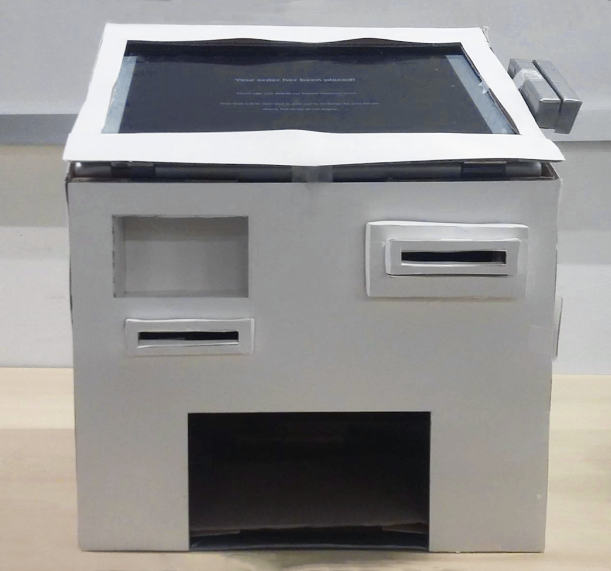
Caption to be added.
More Feedback from Mentors
During a final critique session with other teaching assistants within the course, there were several concerns related to the visual aesthetics and use of digital interface components.
The lack of direction and consistency of our visual design to our current iteration of the kiosk didn't demonstrate improvements made to its physical components, so there was a
need to really move forward with increasing the fidelity of our kiosk's visual aesthetics and physical components within the remaining time that our group had for the project.
Furthermore, the teaching assistants expressed confusion about the text and buttons shown during the food delivery method, which meant that the current representation of available food delivery
options on the kiosk interface did not adequately address the context of people's concerns of food delivery potentially being obtrusive to the movie experience. The interface for the food
delivery options doesn't not clearly emphasize recommended food delivery options when the person has arrived relative to their selected movie showtime.
Design Considerations
Many different factors associated with the kiosk were classified and defined, combining insights found from user research,
user testing, TA feedback, context of use within a movie theater, and technological considerations. Some of these factors
were also meant to explicitly mention again some of the goals and intended features that the kiosk would incorporate.
This was done so that a clearer establishment of what the kiosk should incorporate is outlined and better reflects on
the context of use of the kiosk and feedback received.
Below is the design criteria to explain what the kiosk should have.
Purpose
The kiosk functions by allowing customers to purchase or pick-up tickets as well as order food in the same transaction.
They can choose to have their food picked up or delivered to their reserved seat. After purchase, the kiosk will dispense
the ticket and a buzzer for orders being prepared.
Concerns are mainly with customer coherency due to one kiosk providing multiple services. The whole process should be
designed to be quick enough to avoid line congestion.
Digital Screen
The UI / UX should provide multiple avenues for receiving tickets, e.g., purchase or pickup, and a scanner to redeem
pre-ordered tickets and coupons. This is to be achieved through a linear touch navigation that is understood by the
general moviegoing demographic.
Potential failures in the form of hardware and software errors may impede customer satisfaction. To alleviate this,
the kiosk can provide a “call for help” button with a speaker system between the user and an employee.
Visual Aesthetics
The look of the kiosk should attract the moviegoers’ attention and be unintimidating by following the theater’s own
provided visual style (e.g., AMC will have kiosks following their black-red-white color palette).
Multiple kiosks will be placed near the entrance with slow blinking LED lights to signal that the kiosk is available
for use. During use, the LED lights can turn off or fade.
Diversity of audience opinions on what looks “good” or “bad” is inevitable. LED lights may intimidate some customers
but attract others.
Storage
The kiosk should fit several rolls of ticket-printing paper to withstand at least a day’s worth of sales and must include
enough space for several dispensable buzzers which could be easily reinserted by employees after use.
Despite this, it shouldn’t take up too much space so that the kiosk is overwhelmingly large. Reloadability issues require
constant employee maintenance and would probably require an interface to show how much is left.
Consider providing trays or cupholders to be dispensed and taken into the theater.
Multisensory Interactions
Users should be able to touch the screen and receive physical components such as tickets and buzzers. Visual components
should communicate a linear pathway for ordering tickets and food. Audio sound effects should be played to signal
checkpoints and to engage the user with a little fun.
With a touch screen, tactile feedback could be limited if hardware isn’t as advanced. Also, more components means more
likelihood of needing to be fixed.
Preferably, a UI that provides tactile feedback so that the user has fun pressing buttons and is ensured that their interaction went through.
Buzzer Feature
Buzzers should enable an interconnected environment that will allow the customer to take a buzzer with them into
their theater screening and return it to an employee in exchange for their food order.
However, buzzers may vibrate too loudly and be distracting for other moviegoers.
Theater Employees
Theater employees should be able to facilitate interactions with the kiosks in that they maintain their storage,
as well as receive buzzers from moviegoers and reinsert them into the kiosk.
Connecting Design Considerations to Features of the Physical Kiosk
Within the limited time and construction capabilities that our team members had, I did my best to lay out additional labels and physical components
to include for the kiosk. This included labels for cash insertion slots, card swiping, ticket dispensing slots, and storage pockets to dispense tickets and a phone-sized buzzer.
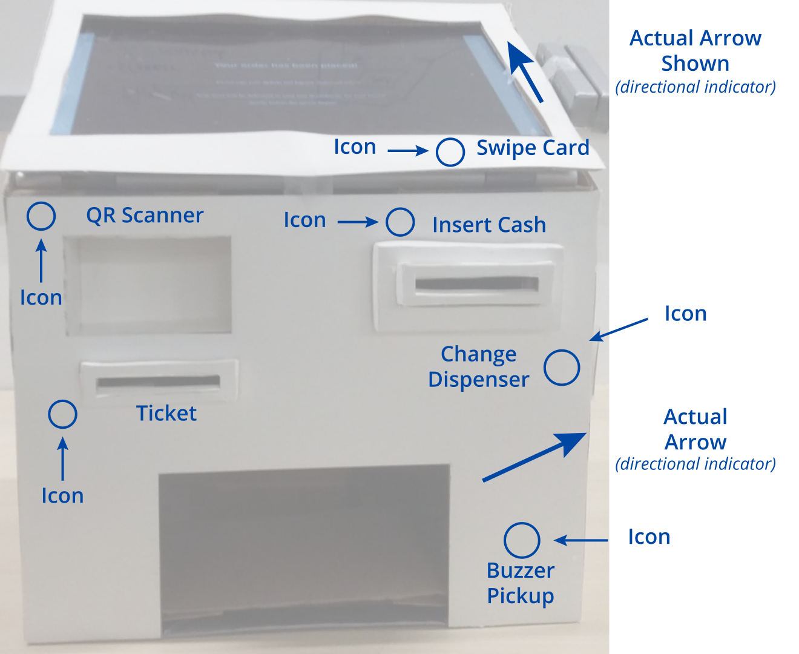
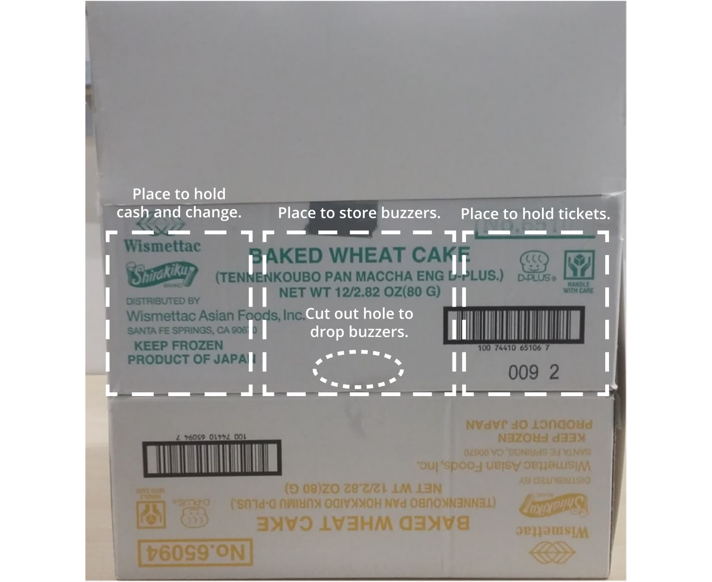
In the front of the kiosk, I included circles to indicate placement of icons as well as the actual labels based on the placement of the physical features that my teammate built. On the back of the kiosk no labels were intended to be placed, but shapes and labels were used to indicate holes to be cut out and their purpose.
Redesign of the Kiosk's Branding
With insights from additional feedback given from our teaching assistants as well as takeaways of the strengths and weaknesses of Ludi's attempt in the second iteration of the kiosk interface,
I went back to making another moodboard and visual style guide from scratch. For the modoboard, I set constraints to pick images that emphasized on experiences that were immersive and
fulfilling with worry-free environments. There were less images used with more limiting colors, which informed the use of only three colors within the new style guide.
Moodboard - Before
Moodboard - After
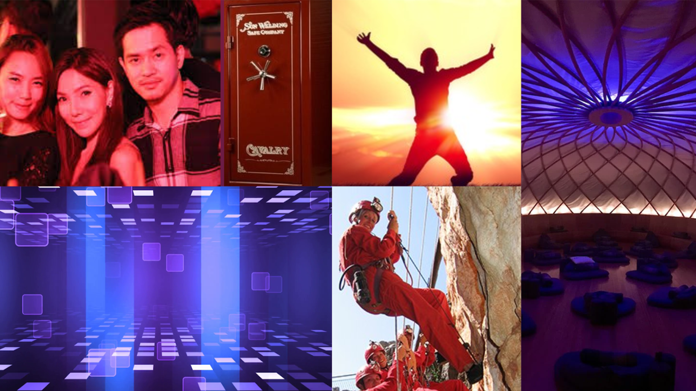
Visual Style Guide - Before
Visual Style Guide - After
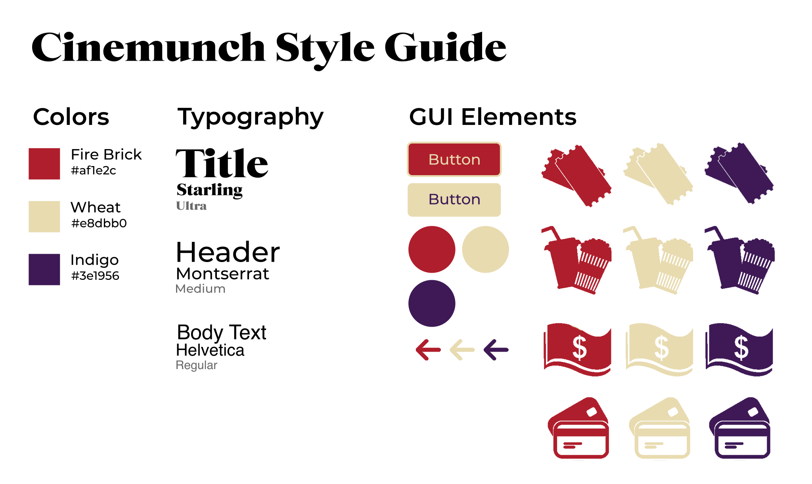
Final Designs
Cinemunch, a kiosk that makes ordering tickets and food simple to fulfill your movie experience. Below is another live, interactive prototype made on Figma for you to try out the kiosk interface.
Digital Interface
Physical Kiosk
This was the final result of the physical kiosk, which used some of the labeling guidelines and colors to indicate physical components.
In the front of the kiosk, physical components shown are the bill insertion for paper dollar bills, a slot on the left for scanning the QR code for verifying ticket purchases, a ticket dispensing slot right below the scanning code slot, and a larger slot at the bottom to dispense buzzers for food delivery.
Front of the kiosk with the interface with bill insertion, slot for scanning QR codes, ticket dispensing slot, and a larger bottom slot for dispensing food delivery buzzers.
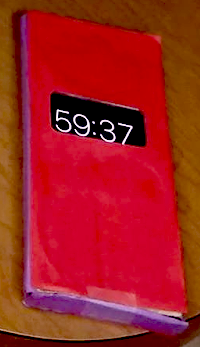
Buzzer with a timer shown that is dispensed in the bottom slot.
The side of the kiosk would include a change dispenser. A person would pull the tab with the label on it to reach for the change. Towards the top of the kiosk, a person could swipe their debit or credit card for payment.
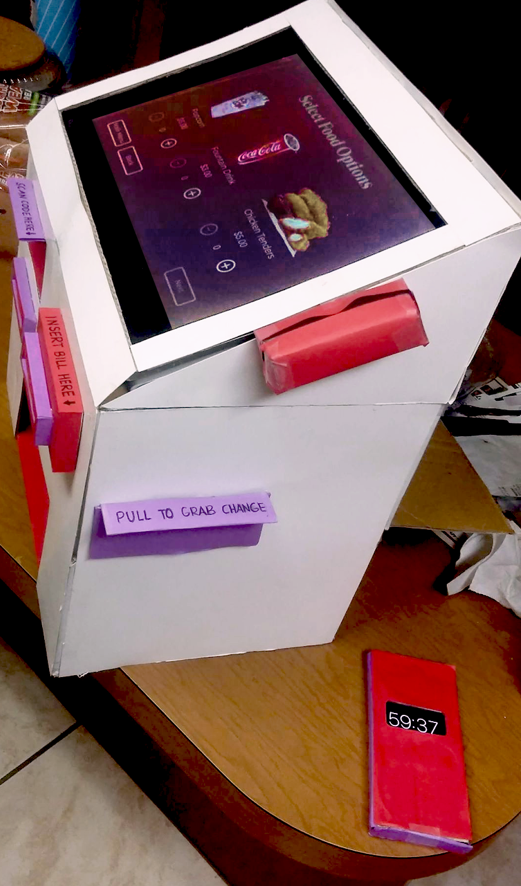
Change dispenser (bottom right side of kiosk), card swiper (upper right side of kiosk), and buzzer shown.
Other Deliverables
Poster
I made a simple poster based on the new visual style guide. The content would emphasize the simplicity and ease of getting movie tickets and food as a way for people to fulfill their movie experience.
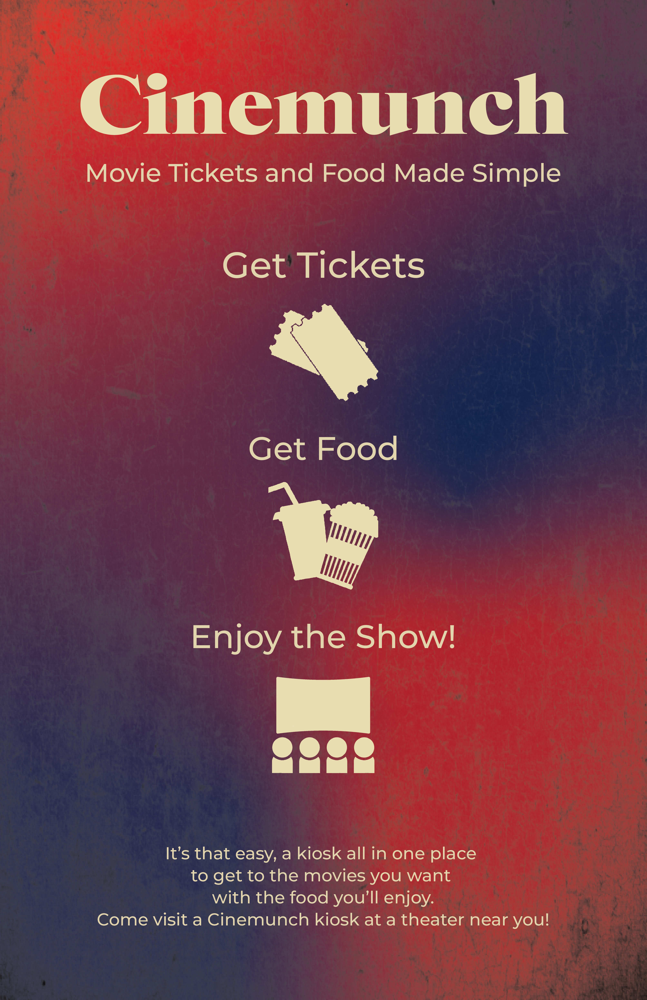
A Cinemunch poster that I made on Illustrator.
Presentation Slide Deck
I helped to consolidate and summarize most of our design process into a slide deck that would be presented in front of others in a class symposium. This summarized only some of the key parts of the design process.
Results and Reflection
The kiosk and the poster were both presented in a class final symposium. Classmates and other people were able to visit our kiosk and try it out. I helped to present my work along with another teammate to our mentors using the prsentation slide deck.
Reflection
This project really pushed my boundaries in translating good visual and interaction design practices into a kiosk interface that is "aware" of the physical components related to the kiosk. I especially learned how
branding of a product would segway into other medium and artifacts for communication, such as a poster. Within working with my team members, we all struggled with keeping up with the multitude of projects to ensure
that the final pieces of branding Cinemunch came together. But, in the end, all of us relied on active communication, trust within our roles, and taking on project initiatives to beautifully craft an experience that
people liked to approach and try out. What kept me motivated to finish this project when the going got tough was a strong personal interest in going out of my comfort zone in research and learning my abilities
to create a solution (and other deliverables) that tied to continuous and iterative feedback.
A group photo taken during the final showcase of our physical kiosk and the Cinemunch poster, with these awesome team members.
Improvements
Here were other things that I wanted to learn and do should there be more available time and energy to continue the project.
Exploring other questions related to the stakeholders and business of the movie industry.
The desirability of the kiosk remained in question for businesses that may or may not have building environments that support or deter the placement of kiosks. With additional time, a more
robust research approach would entail observations of the existing theater spaces and interviewing both staff and visitors from movie theater companies. Topics that would cover these endeavors would be
how people would evaluate their current movie going experiences, how digital technology contributes to their process of movie going, and how businesses currently address issues that people face with the experiences
of obtaining tickets and food.
Gathering more inspirations from existing interfaces and physical kiosks that also have accessibility in mind.
Comparing different kiosks that are usable to as many different people as possible with or without digital types of interfaces would ensure best practices are implemented to the implementation of the physical kiosk
while better understanding the user tasks that kiosk interfaces take into account.